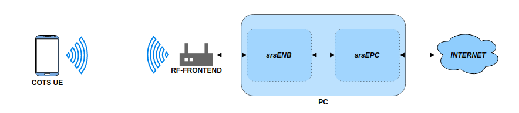
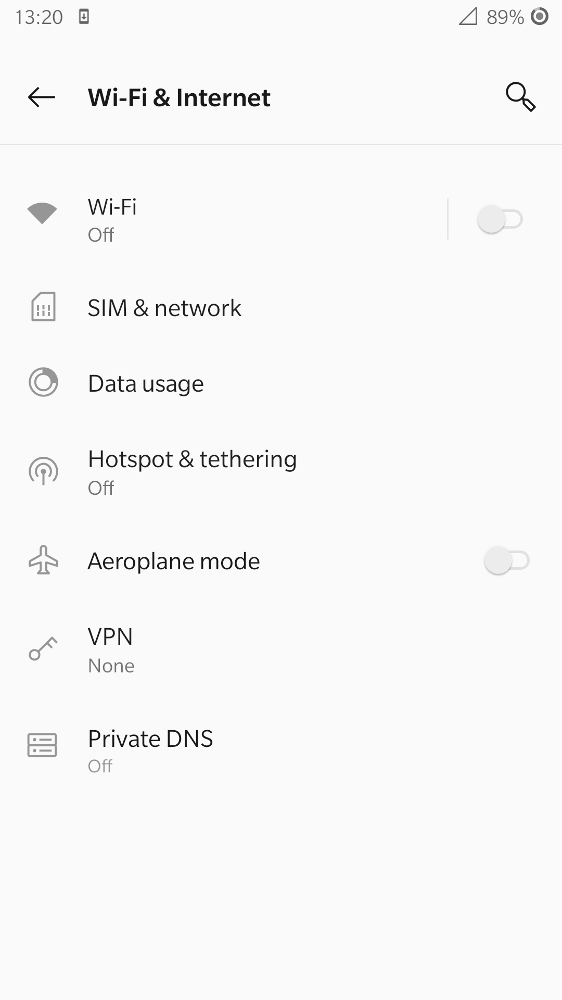
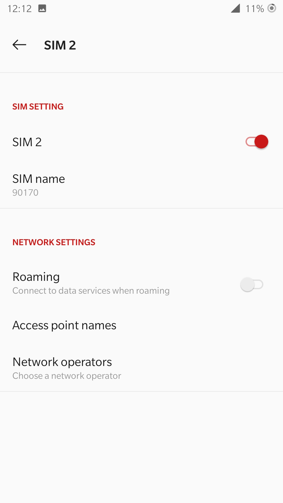
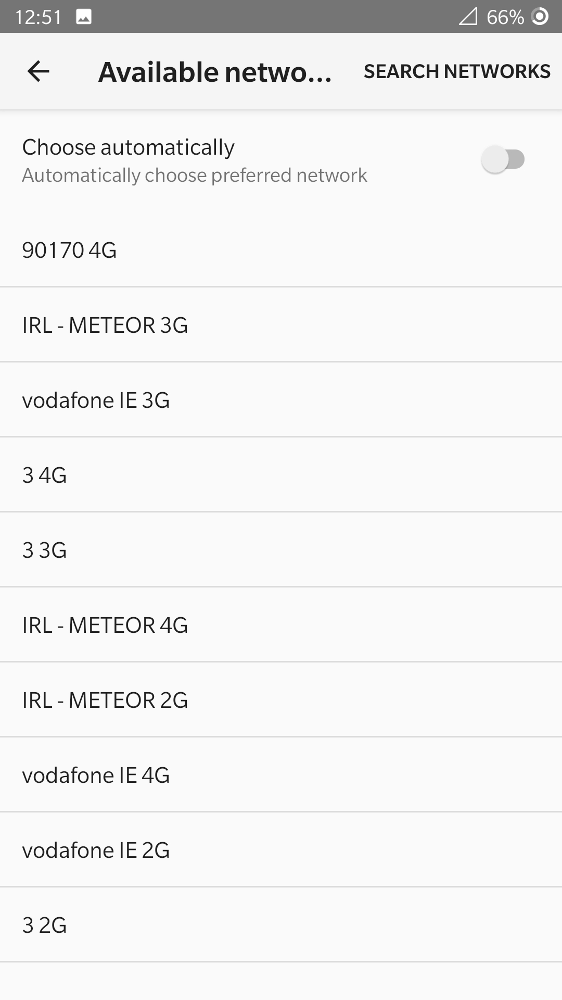

COTS UE
Warning
Please note, operating a private LTE network on cellular frequency bands may be tightly regulated in your jurisdiction. Seek the approval of your telecommunications regulator before doing so.
Introduction
This application note aims to demonstrate how to set up your own LTE network using srsENB, srsEPC and a COTS UE. There are two options for network set-up when connecting a COTS UE: The network can be left as is, and the UE can communicate locally within the network, or the EPC can be connected to the internet through the P-GW, allowing the UE to access the internet for web-browsing, email etc.
Hardware Required
Creating a network and connecting a COTS UE requires the following:
PC with a Linux based OS, with srsRAN 4G installed and built
An RF-frontend capable of both Tx & Rx
A COTS UE
USIM/ SIM card (This must be a test card or a programmable card, with known keys)
The following diagram outlines the set-up:

For this implementation the following equipment was used:
Razer Blade Stealth running Ubuntu 18.04
B200 mini USRP
Sony Xperia XA with a Sysmocom USIM
The following photo shows the real world implementation of the equipment for this use case:

Note, this is for illustrative purposes, this orientation of USRP and UE may not give the best stability & throughput.
Driver & Conf. File Set-Up
Before instantiating the network and connecting the UE you need to first ensure you have the correct drivers installed and that the configuration files are edited appropriately.
Drivers
Firstly, check that you have the appropriate drivers for your SDR installed. If not they must be downloaded from the relevant source. If the drivers are already installed ensure they are up to date and are from a stable release. This step can be skipped if you have the correct drivers and know them to be working.
RF front-end drivers:
Note
This app note was tested using a b200-mini and UHD v4.0, but we recommend using UHD v3.15 where possible.
When the drivers have been installed/ updated you should connect your hardware and check that everything is working correctly. To do this for a USRP using the UHD drivers run the following command:
uhd_usrp_probe
This should be done anytime you are using a USRP before carrying out any testing or implementation to check a stable connection to the radio. Note, you should be using a USB 3.0 interface when using an SDR for this use case.
If you have had to install or update your drivers and everything is working as intended, then you will need to rebuild srsRAN 4G to ensure it picks up on the new/ updated drivers.
To make a clean build execute the following commands in your terminal:
cd ./srsRAN_4G/build
rm CMakeCache.txt
make clean
cmake ..
make
Your hardware and drivers should now be working correctly and be ready to use for connecting a COTS UE to srsRAN 4G.
Conf. Files
The base configuration files for srsRAN 4G can be installed by running the following command in the build folder:
sudo srsran_4g_install_configs.sh <user/service>
You have the option to install the configurations files to the user directory or for all users. For this example the configuration files have been installed for all users by
running the following command sudo srsran_4g_install_configs.sh service. The config files can then be found in the following folder: ~./etc/srsran_4g
You will need to edit the following files before you can run a COTS UE over the network:
epc.conf
enb.conf
user_db.csv
The eNB & EPC config files will need to be edited such that the MCC & MNC values are the same across both files. The user DB file needs to be updated so that it contains the credentials associated with the USIM card being used in the UE.
EPC:
The following snippet shows where to change the MCC & MNC values in the EPC config file:
22 | #####################################################################
23 | [mme]
24 | mme_code = 0x1a
25 | mme_group = 0x0001
26 | tac = 0x0007
27 | mcc = 901
28 | mnc = 70
29 | mme_bind_addr = 127.0.1.100
30 | apn = srsapn
31 | dns_addr = 8.8.8.8
32 | encryption_algo = EEA0
33 | integrity_algo = EIA1
34 | paging_timer = 2
35 |
36 | #####################################################################
Line 27 and 28 must be changed, for Sysmocom USIMS these values are 901 & 70. These values will be dependent on the USIM being used.
eNB:
The above changes must be mirrored in the eNB config. file. The following snippet shows this:
18 | #####################################################################
19 | [enb]
20 | enb_id = 0x19B
21 | mcc = 901
22 | mnc = 70
23 | mme_addr = 127.0.1.100
24 | gtp_bind_addr = 127.0.1.1
25 | s1c_bind_addr = 127.0.1.1
26 | n_prb = 50
27 | #tm = 4
28 | #nof_ports = 2
29 |
30 | #####################################################################
Here, the MCC and MNC values at lines 21 & 22 are changed to the values used in the EPC.
For both of the config files the rest of the values can be left at the default values. They may be changed as needed, but further customization is not necessary to enable the successful connection of a COTS UE.
User DB:
The following list describes the fields contained in the user_db.csv file, found in the same folder as the .conf files. As standard, this file
will come with two dummy UEs entered into the CSV, these help to provide an example of how the file should be filled in.
Name: Any human readable value
Auth: Authentication algorithm (xor/ mil)
IMSI: UE’s IMSI value
Key: UE’s key, hex value
OP Type: Operator’s code type (OP/ OPc)
OP: OP/ OPc code, hex value
AMF: Authentication management field, hex value must be above 8000
SQN: UE’s Sequence number for freshness of the authentication
QCI: QoS Class Identifier for the UE’s default bearer
IP Alloc: IP allocation strategy for the SPGW
The AMF, SQN, QCI and IP Alloc fields can be populated with the following values:
9000, 000000000000, 9, dynamic
This will result in a user_db.csv file that should look something like the following:
1 | #
2 | # .csv to store UE's information in HSS
3 | # Kept in the following format: "Name,Auth,IMSI,Key,OP_Type,OP,AMF,SQN,QCI,IP_alloc"
4 | #
5 | # Name: Human readable name to help distinguish UE's. Ignored by the HSS
6 | # IMSI: UE's IMSI value
7 | # Auth: Authentication algorithm used by the UE. Valid algorithms are XOR
8 | # (xor) and MILENAGE (mil)
9 | # Key: UE's key, where other keys are derived from. Stored in hexadecimal
10| # OP_Type: Operator's code type, either OP or OPc
11| # OP/OPc: Operator Code/Cyphered Operator Code, stored in hexadecimal
12| # AMF: Authentication management field, stored in hexadecimal
13| # SQN: UE's Sequence number for freshness of the authentication
14| # QCI: QoS Class Identifier for the UE's default bearer.
15| # IP_alloc: IP allocation stratagy for the SPGW.
16| # With 'dynamic' the SPGW will automatically allocate IPs
17| # With a valid IPv4 (e.g. '172.16.0.2') the UE will have a statically assigned IP.
18| #
19| # Note: Lines starting by '#' are ignored and will be overwritten
20| ue3,mil,901700000020936,4933f9c5a83e5718c52e54066dc78dcf,opc,fc632f97bd249ce0d16ba79e6505d300,9000,0000000060f8,9,dynamic
Line 20 shows the entry for the USIM being used in the COTS UE. The values assigned to the AMF, SQN, QCI & IP Alloc are default values above, as outlined here in the EPC documentation. Ensure there is no white space between the values in each entry, as this will cause the file to be read incorrectly.
Adding an APN
An APN is needed to allow the UE to access the internet. This is created from the UE and then a change is made to the EPC config file to reflect this.
From the UE navigate to the Network settings for the SIM being used. From here an APN can be added, usually under “Access point names”. Create a new APN with the name and APN “test123”, as shown in the following figure.
{kind=link}
The addition of this APN must be reflected in the EPC config file, to do this add the APN to the config. This is shown in the following snippet:
22 | #####################################################################
23 | [mme]
24 | mme_code = 0x1a
25 | mme_group = 0x0001
26 | tac = 0x0007
27 | mcc = 901
28 | mnc = 70
29 | mme_bind_addr = 127.0.1.100
30 | apn = test123
31 | dns_addr = 8.8.8.8
32 | encryption_algo = EEA0
33 | integrity_algo = EIA1
34 | paging_timer = 2
35 |
36 | #####################################################################
The APN has been added at line 30 above. This must match the APN on the UE to enable a successful connection.
Run Masquerading Script
To allow UE to connect to the internet via the EPC, the pre-configured masquerading script must be run. This can be found in srsRAN_4G//srsepc. The
masquerading script enables IP forwarding and sets up Network Address Translation to pass traffic between the srsRAN 4G network and the external network.
The script must be run each time the machine is re-booted, and can be done before or while the network is running. The UE will not be able to communicate
with the interet until this script has been run.
Before running the script it is important to identify the interface being used to connect your PC to the internet. As the script requires this to be passed in as an argument. This can be done by running the following command:
route
You will see an output similar to the following:
Kernel IP routing table
Destination Gateway Genmask Flags Metric Ref Use Iface
default 192.168.1.1 0.0.0.0 UG 600 0 0 wlp2s0
link-local 0.0.0.0 255.255.0.0 U 1000 0 0 wlp2s0
192.168.1.0 0.0.0.0 255.255.255.0 U 600 0 0 wlp2s0
The interface (Iface) associated with the default destination is one which must be passed into the masq. script. In the above output that is the wlp2s0 interface.
The masq. script can now be run from the follow folder: srsRAN_4G/srsEPC:
sudo ./srsepc_if_masq.sh <interface>
If it has executed successfully you will see the following message:
Masquerading Interface <interface>
The configuration files, user DB and UE should now be set up appropriately to allow the COTS UE to connect to the eNB and Core.
Connecting a COTS UE to srsRAN 4G
The final step in connecting a COTS UE to srsRAN 4G is to first spin up the network and then connect to that network from the UE. The following sections will outline how this is achieved.
Running srsEPC & srsENB
First navigate to the srsRAN 4G folder. Then initialise the EPC by running:
sudo srsepc
The following output should be displayed on the console:
Built in Release mode using commit c892ae56b on branch master.
--- Software Radio Systems EPC ---
Reading configuration file /etc/srsran_4g/epc.conf...
HSS Initialized.
MME S11 Initialized
MME GTP-C Initialized
MME Initialized. MCC: 0xf901, MNC: 0xff70
SPGW GTP-U Initialized.
SPGW S11 Initialized.
SP-GW Initialized.
The eNB can then be brought online in a separate console by running:
sudo srsenb
The console should display the following:
--- Software Radio Systems LTE eNodeB ---
Reading configuration file /etc/srsran_4g/enb.conf...
Built in Release mode using commit c892ae56b on branch master.
Opening 1 channels in RF device=UHD with args=default
[INFO] [UHD] linux; GNU C++ version 9.3.0; Boost_107100; UHD_4.0.0.0-666-g676c3a37
[INFO] [LOGGING] Fastpath logging disabled at runtime.
Opening USRP channels=1, args: type=b200,master_clock_rate=23.04e6
[INFO] [B200] Detected Device: B200mini
[INFO] [B200] Operating over USB 3.
[INFO] [B200] Initialize CODEC control...
[INFO] [B200] Initialize Radio control...
[INFO] [B200] Performing register loopback test...
[INFO] [B200] Register loopback test passed
[INFO] [B200] Asking for clock rate 23.040000 MHz...
[INFO] [B200] Actually got clock rate 23.040000 MHz.
Setting frequency: DL=2685.0 Mhz, UL=2565.0 MHz for cc_idx=0
==== eNodeB started ===
Type <t> to view trace
The EPC console should now print an update if the eNB has successfully connected to the core:
Received S1 Setup Request.
S1 Setup Request - eNB Name: srsenb01, eNB id: 0x19b
S1 Setup Request - MCC:901, MNC:70, PLMN: 651527
S1 Setup Request - TAC 0, B-PLMN 0
S1 Setup Request - Paging DRX v128
Sending S1 Setup Response
The network is now ready for the COTS UE to connect.
Connecting the UE
Connecting the UE to the network is a quick and easy process if the above steps have been completed successfully.
You can now connect the UE to the network by taking the following steps:
Open the Settings menu and navigate to the Sim & Network options

Open this menu and proceed to the sub-menu associated with the USIM being used. It should look something like the following:

Under the Network Operators find the network which you have just instantiated using srsRAN 4G

Select the network that is a combination of your MMC & MNC values. For this example it is the network labelled 90170 4G. The UE should then automatically connect to the network.
{kind=link}
{kind=link}
{kind=link}
The UE should now be connected to the network. To check for a successful connection use the logs output to the console.
Confirming Connection
Once the UE has connected to the network, the console outputs of the srsENB and srsEPC can be used to confirm a successful connection.
EPC Console:
The following output is shown for the EPC after a successful attach. First a confirmation message in the form of UL NAS: Received Attach Complete will be displayed, secondly the EPS bearers will be given out and the ID confirmed on the output, and lastly the Sending EMM Information Message output will be shown. If all of these are displayed in the logs, then an attach is successful. These messages are seen in the last five lines of the console output in the following console output:
Built in Release mode using commit c892ae56b on branch master.
--- Software Radio Systems EPC ---
Reading configuration file /etc/srsran_4g/epc.conf...
HSS Initialized.
MME S11 Initialized
MME GTP-C Initialized
MME Initialized. MCC: 0xf901, MNC: 0xff70
SPGW GTP-U Initialized.
SPGW S11 Initialized.
SP-GW Initialized.
Received S1 Setup Request.
S1 Setup Request - eNB Name: srsenb01, eNB id: 0x19b
S1 Setup Request - MCC:901, MNC:70, PLMN: 651527
S1 Setup Request - TAC 0, B-PLMN 0
S1 Setup Request - Paging DRX v128
Sending S1 Setup Response
Initial UE message: LIBLTE_MME_MSG_TYPE_ATTACH_REQUEST
Received Initial UE message -- Attach Request
Attach request -- IMSI: 901700000020936
Attach request -- eNB-UE S1AP Id: 1
Attach request -- Attach type: 2
Attach Request -- UE Network Capabilities EEA: 11110000
Attach Request -- UE Network Capabilities EIA: 11110000
Attach Request -- MS Network Capabilities Present: true
PDN Connectivity Request -- EPS Bearer Identity requested: 0
PDN Connectivity Request -- Procedure Transaction Id: 2
PDN Connectivity Request -- ESM Information Transfer requested: true
Downlink NAS: Sending Authentication Request
UL NAS: Authentication Failure
Authentication Failure -- Synchronization Failure
Downlink NAS: Sent Authentication Request
UL NAS: Received Authentication Response
Authentication Response -- IMSI 901700000020936
UE Authentication Accepted.
Generating KeNB with UL NAS COUNT: 0
Downlink NAS: Sending NAS Security Mode Command.
UL NAS: Received Security Mode Complete
Security Mode Command Complete -- IMSI: 901700000020936
Sending ESM information request
UL NAS: Received ESM Information Response
ESM Info: APN srsapn
ESM Info: 6 Protocol Configuration Options
Getting subscription information -- QCI 9
Sending Create Session Request.
Creating Session Response -- IMSI: 901700000020936
Creating Session Response -- MME control TEID: 1
Received GTP-C PDU. Message type: GTPC_MSG_TYPE_CREATE_SESSION_REQUEST
SPGW: Allocated Ctrl TEID 1
SPGW: Allocated User TEID 1
SPGW: Allocate UE IP 192.168.0.2
Received Create Session Response
Create Session Response -- SPGW control TEID 1
Create Session Response -- SPGW S1-U Address: 127.0.1.100
SPGW Allocated IP 192.168.0.2 to IMSI 901700000020936
Adding attach accept to Initial Context Setup Request
Sent Initial Context Setup Request. E-RAB id 5
Received Initial Context Setup Response
E-RAB Context Setup. E-RAB id 5
E-RAB Context -- eNB TEID 0x460003; eNB GTP-U Address 127.0.1.1
UL NAS: Received Attach Complete
Unpacked Attached Complete Message. IMSI 901700000020936
Unpacked Activate Default EPS Bearer message. EPS Bearer id 5
Received GTP-C PDU. Message type: GTPC_MSG_TYPE_MODIFY_BEARER_REQUEST
Sending EMM Information
eNB Console:
The eNB console also display messages to confirm an attach. A RACH message should be seen followed by a USER 0xX connected message. Where “0xX” is a hex ID representing the UE.
NOTE, you may see some other RACHs and Disconnecting rtni=0xX messages. This may be from other devices trying to connect to the network, if you have seen a clear connection between the UE and network these can be ignored.
The following shows an output from the eNB that indicates a successful attach:
--- Software Radio Systems LTE eNodeB ---
Reading configuration file /etc/srsran_4g/enb.conf...
Built in Release mode using commit c892ae56b on branch master.
Opening 1 channels in RF device=UHD with args=default
[INFO] [UHD] linux; GNU C++ version 9.3.0; Boost_107100; UHD_4.0.0.0-666-g676c3a37
[INFO] [LOGGING] Fastpath logging disabled at runtime.
Opening USRP channels=1, args: type=b200,master_clock_rate=23.04e6
[INFO] [B200] Detected Device: B200mini
[INFO] [B200] Operating over USB 3.
[INFO] [B200] Initialize CODEC control...
[INFO] [B200] Initialize Radio control...
[INFO] [B200] Performing register loopback test...
[INFO] [B200] Register loopback test passed
[INFO] [B200] Asking for clock rate 23.040000 MHz...
[INFO] [B200] Actually got clock rate 23.040000 MHz.
Setting frequency: DL=2685.0 Mhz, UL=2565.0 MHz for cc_idx=0
==== eNodeB started ===
Type <t> to view trace
RACH: tti=521, preamble=44, offset=1, temp_crnti=0x46
User 0x46 connected
The UE is now connected to the network. and should now automatically connect to this network each time it is powered on. You should keep the UE in airplane mode until you want to connect it to the network. The UE should now also have access to the internet - as if connected to a commercial 4G network.
Troubleshooting
If the phone has troubles finding the network or can’t stay connected it might be due to frequency shifts and drifting of the eNB signal, caused by inaccurate clocks. We therefore always recommend to use an external 10 MHz reference clock or a GPSDO-disciplined clock for the eNB.
Some users may experience trouble connecting to the internet, even after running the masquerading script. Ensure that IP forwarding is enabled, and check your network configuration as this may be stopping the UE from connecting successfully.
Users may also have trouble connecting to the network. Firstly check all information in the configuration and user DB files are correct. You may also need to adjust the gain parameters in the eNB config. file - without high enough power (pmax threshold), the UE won’t PRACH.
Note that some USIM cards may not be compatible in UEs that are “locked” to certain network operators.